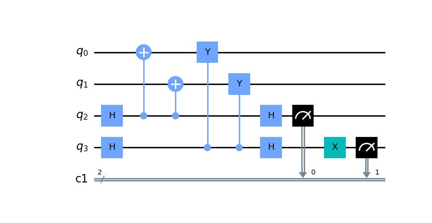
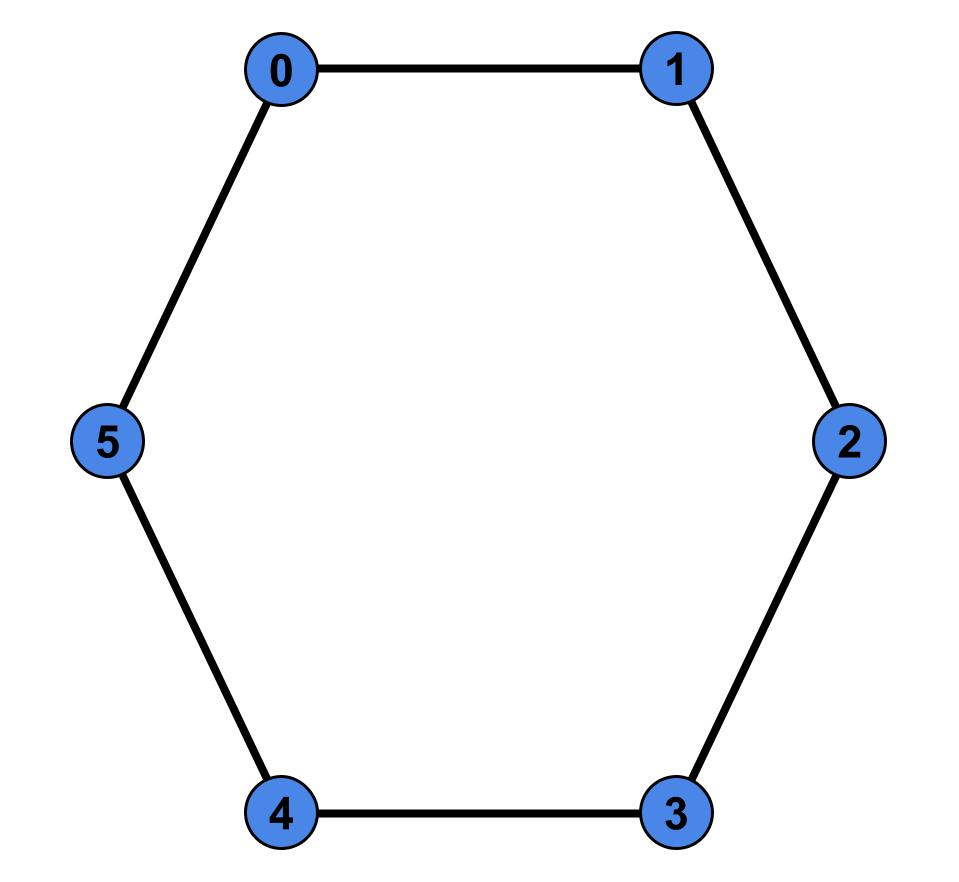

Getting Started (Stabilizer)
This page details how to get started with photonic_circuit_solver. This page covers the Stabilizer class, designed to help use and manipulate stabilizer states
Installation
To install photonic_circuit_solver, you will need an environment with the following packages:
Python 3.8 or superior
NumPy
Qiskit (Optional)
Matplotlib (optional)
Pylatexenc (optional)
Sympy (optional)
Note, all computational aspects are done in NumPy. You only need Qiskit if you want to use any of the methods that output Qiskit circuits. Similar for the SymPy methods. You only need Matplotlib and Pylatexenc if you want to plot the circuit outside of the shell. If you just want do do computation, or are fine with the circuits being drawn in the shell by qiskit, these are not required.
Once you have these packages installed, you can install photonic_circuit_solver in the same environment using
git clone https://github.com/nrmanohar/photonic_circuit_solver.git
cd photonic_circuit_solver
pip install -e .
Theory
Background
Quantum states are very important for the purposes of quantum computing. However, one issue with representing quantum states is that they grow exponentially.
For a standard pure quantum state, the size of the vector needed to represent it grows exponentially. However, there is a solution. It turns out a subset of quantum states can be represented by a set of stabilizers rather than a state vector (or a density operator). Suppose we have a unitary operator
Which is a Kronecker product of Pauli operators. Let’s suppose we have some state such that
We say that the operator \(U\) stabilizes the state \(|\psi\rangle\). It turns out, for a stabilizer state, we can represent that state uniquely using \(n\) stabilizers rather than a vector of size \(2^n\).
Group Theory
For a crash course on group theory, a group is a set of elements with an associated binary operation (ex. the set of integers with the operation of addition) that abide by four properties
Closed under binary operation.
There exists an identity element.
For every element of the group, there exists an inverse.
The operation is associative.
Where \(P(N)\subseteq U(N)\) such that all \(M\in P\) is a tensor product of Pauli matrices. We say this is the stabilizer group for the state \(|\psi\rangle\). If you want, you can prove that \(G\) is in fact a group. However, this doesn’t really help us, since can be a very large set. But we have something else to help us. Every group has a set of generators. We denote the set of generators as \(S\). We denote \(\langle S\rangle\) as the set of all combinations of the elements of \(S\), and in and of itself form a group. If \(G = \langle S\rangle\), we say \(S\) generates \(G\). If we choose a generating set carefully, they can form our representation of the state. We can use \(n\) matrices to represent the state instead of a \(2^n\) size vector.
One important thing to note, the set of stabilizers is not unique. For example, take the standard bell state \(|\psi\rangle = \frac{1}{2}(|00\rangle+|11\rangle)\). I can generate it’s set of stabilizers from the generating set \(S = \{ZZ,XX\}\), but I can also generate the same set from the generators \(S=\{XX,-YY\}\)
However, an important caveat, your stabilizers must be ‘independent’ of each other (sort of analogous to Linear Independence). What does that mean? Let’s have a stabilizer state \(\ket{\psi}\) with stabilizers \(\{g_1,g_2\ldots g_m\}\)
If we generate a group from them we get \(G = \langle g_1,g_2\ldots g_m\rangle\)
Here’s the key, let’s generate a group \(G' = \langle g_1\ldots g_{i-1},g_{i+1}\ldots g_n\rangle\) where we removed one arbitrary generator. No matter which generater we removed, \(G'\subset G\). In other words, removing one of the generators reduces the size of your group. If this is true, we say our generators are ‘independant.’
For large states, it’s hard to determine by inspection. However, this package comes pre-built with verification for independence of generators.
Clifford Operations
The Clifford group are the set of all operations that can be formed using CNOT, Phase (denoted as \(S\) in the package), and Hadamard Gates. It turns out, applying a Clifford unitary on a stabilizer state converts it into another stabilizer state. Moreover, any stabilizer state can be realized from any other stabilizer state by means of clifford operations. Now this package also allows for more operations. Consider the Pauli rotations
So every \(\pi\) rotation about an axis is a Clifford operator, and is thus built into our package. Similarly
So the default Clifford operations this package utilizes are CNOT, H, S, X, Y, Z, and CZ gates.
Tableau Formalism
This package utilizes a way to represent \(S\) as an \(n\times 2n\) matrix given as
We denote \(S_{i,j}=I\) as \(X_{i,j}=0\) and \(Z_{i,j}=0\)
We denote \(S_{i,j}=Z\) as \(X_{i,j}=0\) and \(Z_{i,j}=1\)
We denote \(S_{i,j}=X\) as \(X_{i,j}=1\) and \(Z_{i,j}=0\)
We denote \(S_{i,j}=Y\) as \(X_{i,j}=1\) and \(Z_{i,j}=1\)
However, if you remember, a set of stabilizers for the standard bell state is \(S=\{XX,-YY\}\). Note the second stabilizer is \(-YY\). To account for this, we define a signvector, which denotes the sign of the \(i\) th stabilizer. So with the signvector, we can denote this state as
Examples
Here’s a sample code with the photonic_circuit_solver package
from photonic_circuit_solver import *
state = Stabilizer()
state.report()
which generates the output
[[1. 1. 0. 0.]
[0. 0. 1. 1.]]
[0. 0.]
As you can see, this is the tableau for the standard bell state. However, this isn’t that useful. If you want to initialize \(n\) qubits in the \(|0\rangle\) state, we can instead say
state = Stabilizer(5)
state.report()
which generates the output
[[0. 0. 0. 0. 0. 1. 0. 0. 0. 0.]
[0. 0. 0. 0. 0. 0. 1. 0. 0. 0.]
[0. 0. 0. 0. 0. 0. 0. 1. 0. 0.]
[0. 0. 0. 0. 0. 0. 0. 0. 1. 0.]
[0. 0. 0. 0. 0. 0. 0. 0. 0. 1.]]
[0. 0. 0. 0. 0.]
Let’s do an example, building the GHZ state
state = Stabilizer(3)
state.report()
Which generates the output
[[0. 0. 0. 1. 0. 0.]
[0. 0. 0. 0. 1. 0.]
[0. 0. 0. 0. 0. 1.]]
[0. 0. 0.]
We will then apply a Hadamard to the first qubit
state.clifford('h',0)
state.report()
Which generates the output
[[1. 0. 0. 0. 0. 0.]
[0. 0. 0. 0. 1. 0.]
[0. 0. 0. 0. 0. 1.]]
[0. 0. 0.]
We then apply two CNOTs
state.clifford('cnot',0,1)
state.clifford('cnot',1,2)
state.report()
which generates the final tableau of
[[1. 1. 1. 0. 0. 0.]
[0. 0. 0. 1. 1. 0.]
[0. 0. 0. 0. 1. 1.]]
[0. 0. 0.]
However, if we have a complicated tableau, it might be hard to figure out what it’s saying. Consider a state with the following tableau
[[1. 0. 0. 1. 0. 0. 1. 1. 0. 0.]
[0. 1. 0. 0. 1. 0. 0. 1. 1. 0.]
[1. 0. 1. 0. 0. 0. 0. 0. 1. 1.]
[0. 1. 0. 1. 0. 1. 0. 0. 0. 1.]
[1. 1. 1. 1. 1. 0. 0. 0. 0. 0.]]
[0. 0. 0. 1. 0.]
It’s hard to make any sense of that. Fortunately, we have a method for that! If we had a state with the associated tableau, we can put
stabs=state.stabilizers()
print(stabs)
and that generates the output
['XZZXI', 'IXZZX', 'XIXZZ', '-ZXIXZ', 'XXXXX']
which is a lot easier to understand.
One of the most used applications of stabilizer formalism is defining and manipulating graph states. This package comes with that too!
We need an edgelist
edgelist = [[0,1],[1,2],[2,3],[3,4],[4,5],[5,0]]
Each sublist represents a connection, between the two qubits numbered (indexed from 0 to \(n\)-1)
Now if type
state = Stabilizer()
state.graph_state(edgelist)
This generates a stabilizer state equivalent to doing the following circuit on the computational zero state

state = Stabilizer(2,'XX,-YY')
For both of the following examples. Now I want the circuit that measures the associated stabilizers. For that, I’ll use the stabilizer_measurement() method
import matplotlib
import matplotlib.pyplot as plt
circ = state.stabilizer_measurement()
circ.draw('mpl')
plt.show()
Which generates the output
{kind=link}
Note, if your state is generated properly, the stabilizer measurement should always return 0’s, and the code is set up as such.
For making graph states, we can use the edgelist constructor directly at the initialization step. Let’s make a hexagonal ring
{kind=link}
This corresponds to an edgelist of [[0,1],[1,2],[2,3],[3,4],[4,5],[5,0]]
state = Stabilizer(edgelist = [[0,1],[1,2],[2,3],[3,4],[4,5],[5,0]])
state.report()
Which generates the output
[[1. 0. 0. 0. 0. 0. 1. 0. 0. 1.]
[0. 1. 0. 0. 0. 1. 0. 1. 0. 0.]
[0. 0. 1. 0. 0. 0. 1. 0. 1. 0.]
[0. 0. 0. 1. 0. 0. 0. 1. 0. 1.]
[0. 0. 0. 0. 1. 1. 0. 0. 1. 0.]]
[0. 0. 0. 0. 0.]
If we write
stabs=state.stabilizers()
print(stabs)
We get
['XZIIZ', 'ZXZII', 'IZXZI', 'IIZXZ', 'ZIIZX']
The Inner Workings
This section is more about the code of the package rather than the theory. Reading this section is not necessary for a background to use the package
Verification
Since a lot of this package is self redundant, there needs to be a lot of verification to make sure your stabilizers are still up to standard
The first check is done by numpy itself. If your stabilizers don’t form the right dimensions, it’ll break numpy and return a numpy error.
The first real check done is to check whether the number of Pauli’s in a stabilizer matches the number of stabilizers. As such, this package doesn’t encode stabilizer codespaces, which are linear subspaces defined by using less than a full set of generators.
The second check done by the package is an empty column check. That basically means whether or not you have a free qubit, which is not a unique state.
The third check is commuter check, which would take \(\mathcal{O}(n^2)\) time, checks that each stabilizer commutes with each other stabilizer.
The fourth and final check is linear independence. There’s a theorem in Nielson and Chuang that says the generators are independent if and only if the rows of the tableau are linearly independent. Utilizing them in conjunction will force all of our stabilizers to be valid to describe a unique state.
Clifford Manipulations
Clifford manipulations on Tableau are known, so the package just implements them. There are many papers and textbooks that have them described, but here’s how they are implemented. First, lets look at single qubit gates applied to some qubit j
A Pauli gate is the simplest to implement, since applying a Pauli gate doesn’t change the stabilizers, just the signvector. This is computationally enforced by going through each generator and looking at the pauli at the jth index. If it is the identity or the same as the Pauli gate being implemented, alter nothing. If its a different Pauli, clip the signvector element associated with that generator.
Hadamard gates enforce the following transformations \(X\overset{H}{\rightarrow} Z\text{, }Z\overset{H}{\rightarrow} X, Y\overset{H}{\rightarrow} -Y\). This is enforced by swapping the jth column of the X side of the tableau and the jth column of the Z side of the tableau, and if both entries in the kth row are 1, flipping the signvector.
CNOT gates are trickier, but the key thing to note is that CNOT(XI) = XX(CNOT) and CNOT(IZ) = ZZ(CNOT), which we can generalize in the tableau as a bitwise addition of the columns associated with the two qubits, and putting it into the column of the target qubit on the X matrix and into the column of the control qubit in the Z matrix.
Phase gates don’t affect Z Pauli due to commutation, and implement the chain \(X\overset{S}{\rightarrow}Y\overset{S}{\rightarrow}-X\overset{S}{\rightarrow}-Y\overset{S}{\rightarrow}X\), which is implemented by a bitwise addition of the jth column of the X matrix into the jth column of the Z matrix, and implementing sign changes if the initial state was stabilized by a Y Pauli.